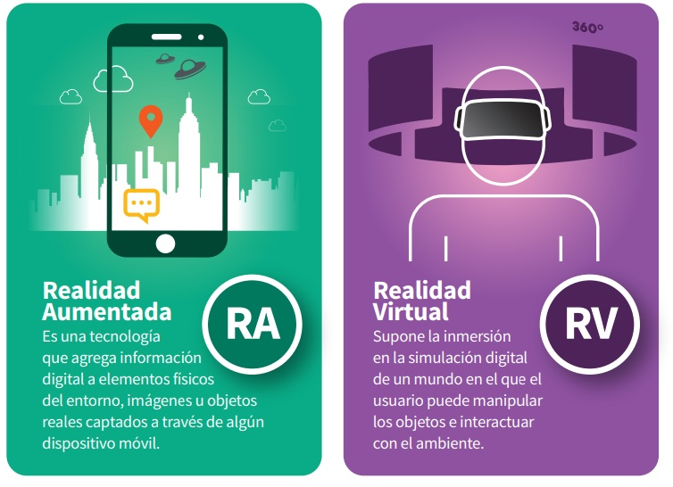

RV Y RA

La realidad virtual (RV) y la realidad aumentada (RA) son tecnologías inmersivas, pero difieren en cómo interactúan con el usuario
La RV crea un entorno completamente nuevo y digital, mientras que la RA superpone elementos digitales al mundo real, enriqueciendo la experiencia sin aislar al usuario del entorno físico.